摘要
前言
自民國93年起，每年七月舉辦的大學指考，是決定許多高三生未來四年的去向的重要檢定，而每年各科試卷難度也會成為許多準大學生間短期的熱門話題。
此外，各大學校系歷年的最低錄取分數，也被拿來作為考生選填志願的重要參考，以107年指考放榜的結果為例，要錄取政大經濟系，加權註後的分數至少要拿到377.25分，若我是108年的指考考生，便可以此為參考，比對自己的加權分數後評估自己被錄取的可能性。
然而如前所述，每年考試的難度不同，當某科目難度較往年上升時，考生的表現會下滑，因此加權後分數並不適合直接拿來與往年做比較，必須根據當年的考試難度做調整，換句話說：我不能因為107年的最低錄取分數是377.25分，就說我108年只要考相同的分數就可以上，因為有可能108年的考試整體較難，大家都考得較差，錄取分數便會下降。
但該如何衡量每一年的考試難度呢？若純粹以某單一個人寫歷屆試題的經驗進行評價，可能過於主觀，難度分級的標準、所使用的單位也是難題（使用「分數」會衍生太多其他變因，包括：以前是否寫過類似題目、寫試卷時環境的壓力是否跟真實考場相同、當天肚子痛不痛等）。
那麼，若是採用「該份試卷當年應屆考生之全體表現」作為參考呢？首先，如此一來便能解決「過於主觀」的問題，且難度的衡量也可以使用全體學生分數的某個統計值。
然而這必須有一個假設，那就是每年整體的考生素質為「獨立同分配」（iid），在此假設下，我決定使用「五標」註作為難度衡量的標準，其餘說明請見下一段。
計量模型
首先我決定先採用國文、英文、數甲、數乙、地理、歷史、物理、化學、生物共9科的「均標」作為解釋變數註，因此模型如下：
（模型一）y=β0+β1x1+β2x2+β3x3+β4x4+β5x5+β6x6+β7x7+β8x8+β9x9+u1
其中y為某年政大經濟系最低錄取分數，x1～x9即為對應年份上述9科之均標成績。
但考慮到能就讀政大經濟系的學生，整體程度應該還不錯，因此其程度的分配狀況應該更接近「頂標」或者至少「前標」之學生族群的分配狀況，因此我決定再分建構以下兩個模型：
（模型二）y=α0+α1w1+α2w2+α3w3+α4w4+α5w5+α6w6+α7w7+α8w8+α9w9+u2
其中w1～w9為對應年份上述9科之「前標」成績。
（模型三）y=γ0+γ1z1+γ2z2+γ3z3+γ4z4+γ5z5+γ6z6+γ7z7+γ8z8+γ9z9+u3
其中z1～z9為對應年份上述9科之「頂標」成績。
Restricted Models
然而，歷年來政大經濟系所採計的指考分數只有國文、英文、數乙三科，原模型中的其他六科極有可能不顯著影響被解釋變數y，因此除上述三個模型外，我將另外使用以下四個限制模型：
（模型四）y=β0+β1x1+β2x2+β3x3+u4
x1～x3分別為國文、英文、數乙三科之均標。
（模型五）y=α0+α1w1+α2w2+α3w3+u5
w1～w3分別為國文、英文、數乙三科之前標。
（模型六）y=γ0+γ1z1+γ2z2+γ3z3+u6
z1～z3分別為國文、英文、數乙三科之頂標。
基於某些原因，（於下一段說明）我另外建構模型七如下：
（模型七）y=δ0+δ1z1+δ2z2+δ3z3+u7
z1～z3仍分別為國文、英文、數乙三科之頂標。
資料來源與分析
資料來源
(1)
歷年政大經濟系指考最低錄取分數：大學考試入學分發委員會。
(2) 歷年指考各科五標：網路資料。
(2) 歷年指考各科五標：網路資料。
需要注意的是，由於政大經濟系於民國107年起將數乙的權重由原本的1.5倍調升至2.0倍，在這之後之年度(107、108年)的最低錄取分數皆不可與調整前的相提並論，因此我所分析的是民國93至106年（共14年）的資料。
資料分析
首先，模型一、模型二、模型三的檢定統計如下：
▼模型一（均標模型）
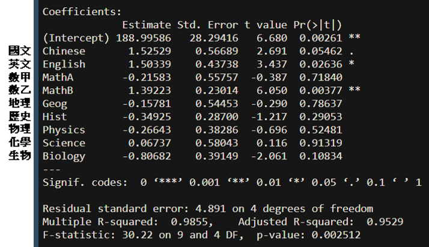
▼模型二（前標模型）
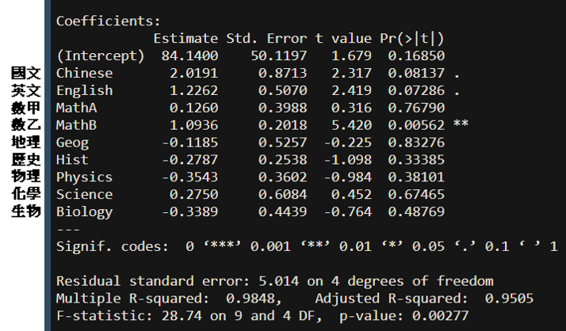
▼模型三（頂標模型）
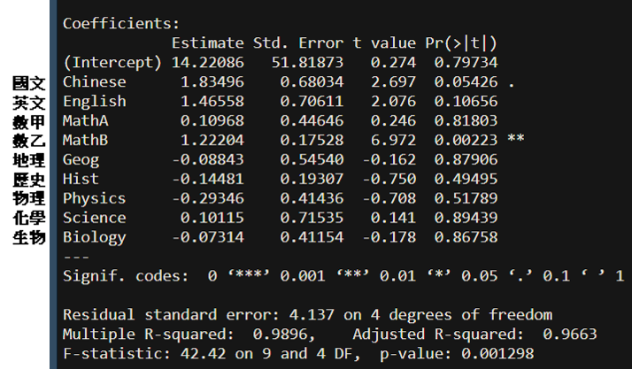
由於太多不相干的科目被考慮，不但那些科目自己不顯著，也使得原本可能顯著影響y的科目，其個別顯著性消失。
有趣的是，即使有諸多雜訊，三個模型卻有一個共通點，那就是「數乙」在0.1%顯著水準下仍是顯著影響被解釋變數（y）的。或許這個可以解釋成：「即使不論其他科考地難不難，只要那年數乙難，政大經濟系的最低錄取分數就會下降。」註
言歸正傳，為了證明除了國文、英文、數乙外，其他六科真的不具顯著性，我利用模型三（頂標模型）延伸檢測了該些科目的joint
significance，結果如下：
▼聯合顯著性檢定
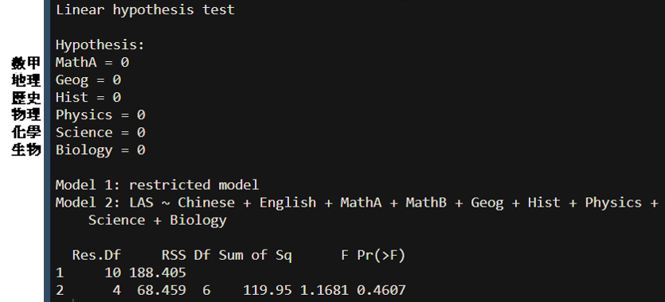
可見Pr(>F)＝0.4607 >
0.05，故可以推測數甲、地理、歷史、物理、化學、生物等六科的難度並不顯著影響政大經濟系當年的最低錄取分數，因此後續我將以模型四到模型六及其延伸，作為主要使用之模型。以下為模型四到模型六各係數的顯著狀況：
▼模型四（均標模型）
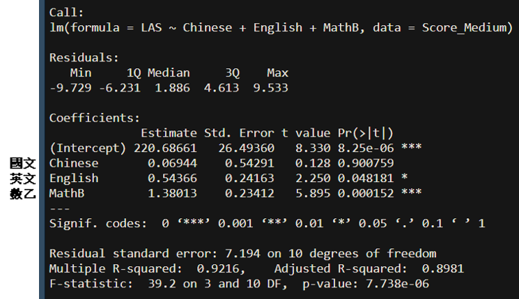
▼模型五（前標模型）
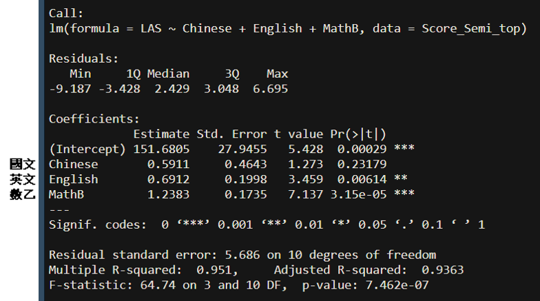
▼模型六（頂標模型）
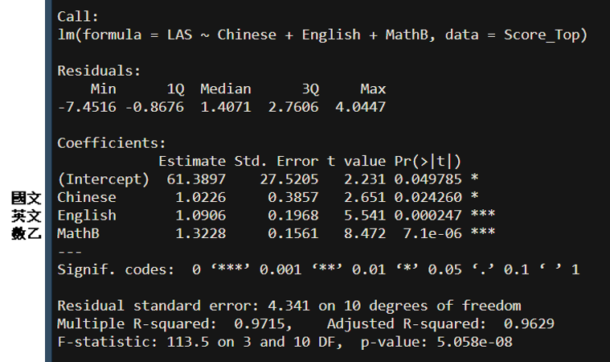
從上面三個結果可見，若使用均標或者前標作為衡量難度的標準，則國文的係數皆不具顯著性、英文的顯著水準也偏低；使用頂標模型雖可以解決這個問題，不過截距項的顯著水準卻被犧牲了。註
然而，我發現若將模型六的國文成績改成「國文成績的平方」，便可以解決截距項顯著水準偏低的問題。（見下方模型七圖）
至於國文科的係數之顯著水準普遍較低的原因，由前面模型四到模型六的圖可知，是因為「標準誤過高」（國文科的標準誤都是英文與數甲的2.5~3倍），而標準誤過高又可歸咎於「該解釋變數」的Total
Sum of Squares過低，而「國文科的Total Sum of
Squares過低」這件事就隱含了：「歷年來的指考國文難度大致相同，使得學生的國文科成績相較於其他科而言，沒有太大波動。」由下圖可見，事實的確如此：
▼歷年國文科頂標成績
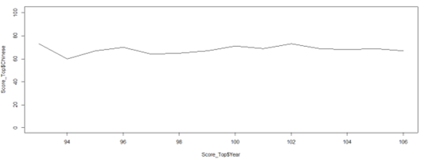
最後我所使用的模型是模型七：
y=γ0+γ1(z1)2+γ2z2+γ3z3+u
z1～z3分別為國文、英文、數乙三科加權後之頂標。
▼模型七（國文平方的頂標模型）
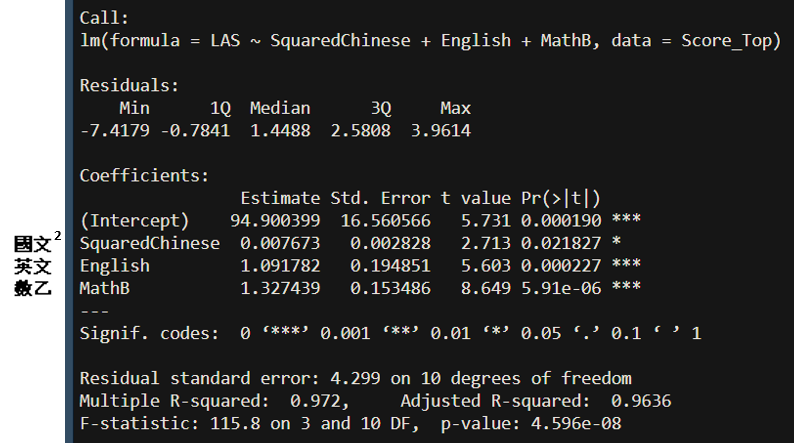
實證結果
由民國93年至民國106年的資料，可以得到下面這個Fitted
Regression Line:
yi=94.9004+0.007673×(z1)2+1.091782×z2+1.327439×z3
我們可以利用此模型來預測資料中所未涵蓋的107年、108年甚至更久以後的指考，需要注意的是，由於我所蒐集到的被解釋變數(y)皆是以「國文x1.00」、「英文x1.50」、「數學x1.50」加權並加總過後的最低錄取分數，因此模型中的各係數其實已經隱含了對應的倍數在其中，輸入新的一年的成績時無須另外將其加權。不過！由於政大經濟系自107年起將數乙的倍率由1.5倍調升至2.0倍，所以在輸入數乙成績時需將倍率從原本的1.5調至2，也就是說要另外乘以2/1.5。
實測107年指考
▼107年指考五標
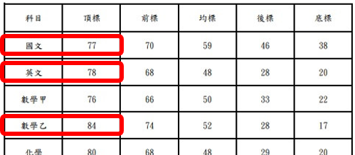
將數字帶入模型中，得到374.2258分。
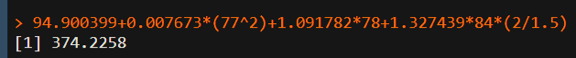
▼107年政大經濟系指考最低錄取分數
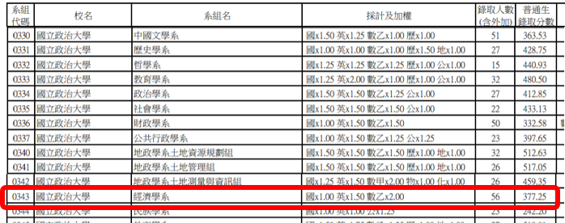
而當年真正的最低錄取分數為377.25分，兩者僅差3.02分！
實測108年指考
▼108年指考五標
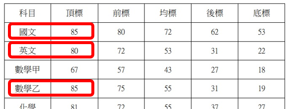
將數字帶入模型中，得到388.1235分。
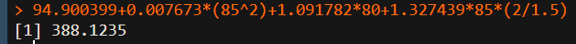
▼108年政大經濟系指考最低錄取分數
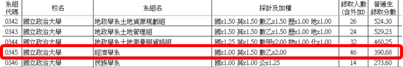
而當年真正的最低錄取分數為390.68分，兩者僅差2.56分！
結論
由前述整個模型選擇的過程我們獲得了兩個啟示：
(1)
政大經濟系學生的能力分布狀況還是比較接近「頂標」學生的分布，應該還不算太差。
因為使用均標與前標做出來的模型（模型四與模型五），其顯著水準皆較低。這裡所謂的「能力分布」指的是同一個人面對各種不同難度的考試時，其表現的「起伏狀況」。
因為使用均標與前標做出來的模型（模型四與模型五），其顯著水準皆較低。這裡所謂的「能力分布」指的是同一個人面對各種不同難度的考試時，其表現的「起伏狀況」。
(2)
比起國文好或英文好，數學好更能讓你在這個系的成績脫穎而出。
這個結論是綜合兩個現象所歸納而成，第一個現象是，在跑9個科目對最低錄取分數的回歸時，（即模型一到模型三）即使因不重要的變數過多導致許多統計量不顯著，「數乙」這科的顯著水準仍皆維持在0.001；第二個現象便是在於Fitted Regression Line，可以發現各變數的partial effect屬z3（數乙）最大。註這兩個現象都說明了，只要當年的數學出難一點，錄取政大經濟系的人分數就明顯下降，可見他們當中大多的數學程度並非「頂尖」，因為真正程度頂尖的人不太會因為考題比較難，成績就出現太大波動。（況且這還只是數乙！）對準考生而言，這個啟示背後的意義即：如果你的目標是政大經濟系，數學是決勝關鍵！
這個結論是綜合兩個現象所歸納而成，第一個現象是，在跑9個科目對最低錄取分數的回歸時，（即模型一到模型三）即使因不重要的變數過多導致許多統計量不顯著，「數乙」這科的顯著水準仍皆維持在0.001；第二個現象便是在於Fitted Regression Line，可以發現各變數的partial effect屬z3（數乙）最大。註這兩個現象都說明了，只要當年的數學出難一點，錄取政大經濟系的人分數就明顯下降，可見他們當中大多的數學程度並非「頂尖」，因為真正程度頂尖的人不太會因為考題比較難，成績就出現太大波動。（況且這還只是數乙！）對準考生而言，這個啟示背後的意義即：如果你的目標是政大經濟系，數學是決勝關鍵！
最後，雖然不知道坊間的落點分析是怎麼做的，不過我想，若用此概念對每個校系做類似之統計分析，應該可以得到一個還不錯的綜合落點分析結果！
然而還是有兩點必須重申，一是本模型含有一個較強的假設：各年度學生的程度分配為iid；二是畢竟指考開辦至今只不到20個年頭，樣本數可謂極少，加上若某系在某年突然改變篩選倍率或篩選科目，該年的最低錄取分數便不可與其他年相提並論，不過我相信隨著時間過去，樣本數累積漸足，做出的預測會更加準確。